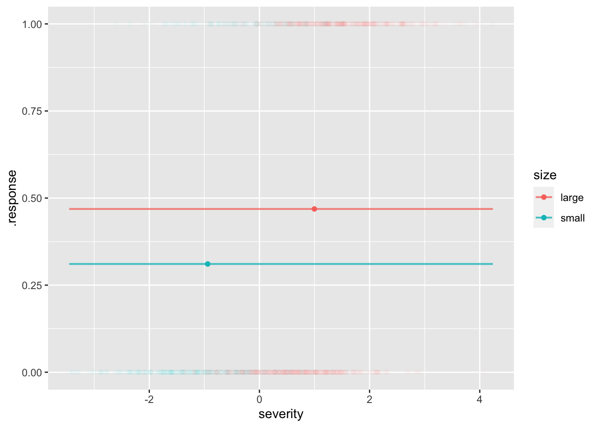
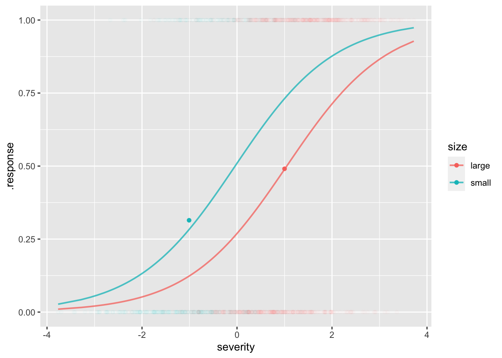
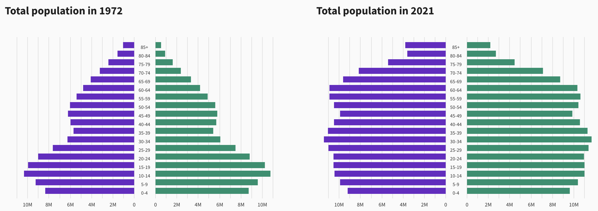
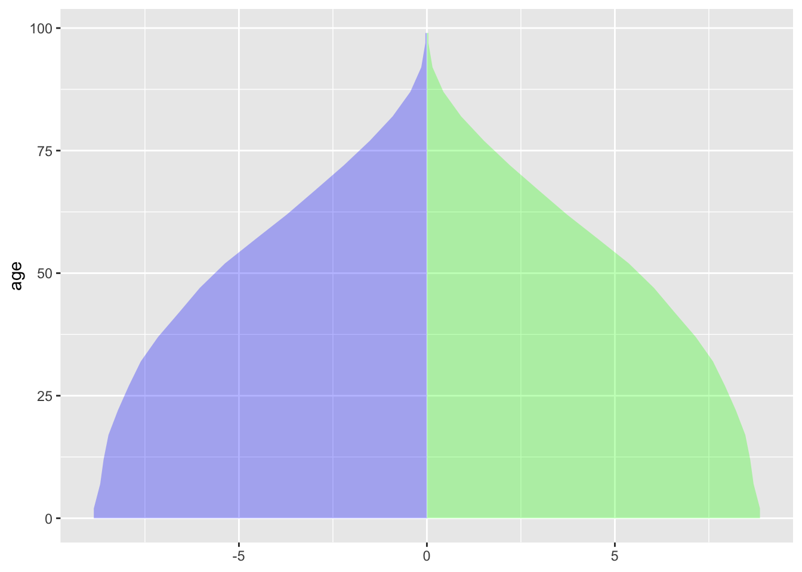
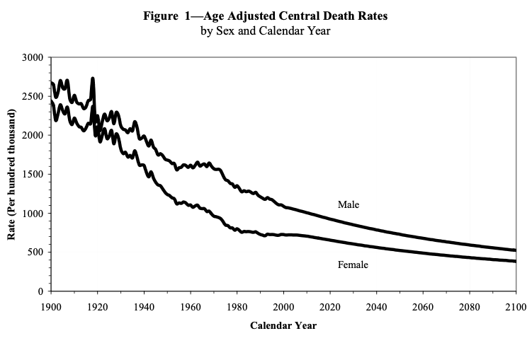

hospital_dag <- dag_make(
size ~ binom(1+exo(), labels=c("small", "large")),
severity ~ 1+ exo() - 2*I(size=="small"),
outcome ~ binom(-1 + severity + I(size=="small"), labels=c("good", "bad"))
)
patients <- sample(hospital_dag, size=1000)Instructor Teaching Notes for Lesson 29
Math300Z
See Takeaways from Lesson 28 for a review of the last class. There, we introduced the term “covariate” to describe an explanatory variable that isn’t of direct interest but which might be important to how the system being modeled works.
stats <- patients |> group_by(size) |>
summarize(msevere=mean(severity), bad = mean(outcome=="bad"))
stats# A tibble: 2 × 3
size msevere bad
<chr> <dbl> <dbl>
1 large 0.997 0.469
2 small -0.939 0.311mod1 <- model_train(zero_one(outcome, one="bad") ~ size,
data=patients)
model_plot(mod1, x=severity, color=size, data_alpha=0.02) |>
gf_point(bad ~ msevere, color=~size, data=stats)Warning: Ignoring unknown aesthetics: fill
mod2 <- model_train(zero_one(outcome, one="bad") ~ size*severity,
data=patients)
model_plot(mod2, x=severity, color=size, data_alpha=0.02) |>
gf_point(bad ~ msevere, color=~size, data=stats)Warning: Ignoring unknown aesthetics: fill
Adjusting for severity …
model_eval(mod2, severity=0, size=c("small", "large"),
interval="confidence") severity size .output .lwr .upr
1 0 small 0.5039882 0.4205391 0.5872158
2 0 large 0.2122228 0.1701288 0.2614506The effect size w.r.t. an explanatory variable is automatically adjusted for all the covariates.
Class activity
Adjusting for age
“Life tables” are compiled by governments from death certificates.
LTraw <- readr::read_csv("life-table-raw.csv")Rows: 120 Columns: 7
── Column specification ────────────────────────────────────────────────────────
Delimiter: ","
dbl (7): age, male, mnum, mlife_exp, female, fnum, flife_exp
ℹ Use `spec()` to retrieve the full column specification for this data.
ℹ Specify the column types or set `show_col_types = FALSE` to quiet this message.head(LTraw)# A tibble: 6 × 7
age male mnum mlife_exp female fnum flife_exp
<dbl> <dbl> <dbl> <dbl> <dbl> <dbl> <dbl>
1 0 0.00584 100000 74.1 0.00491 100000 79.8
2 1 0.00041 99416 73.6 0.000316 99509 79.2
3 2 0.000254 99376 72.6 0.000196 99478 78.2
4 3 0.000207 99350 71.6 0.00016 99458 77.2
5 4 0.000167 99330 70.6 0.000129 99442 76.2
6 5 0.000141 99313 69.6 0.000109 99430 75.2Wrangling to a more convenient format (for our purposes):
LT <- tidyr::pivot_longer(LTraw |> select(age, male, female), c("male", "female"), names_to="sex", values_to="mortality")
LT# A tibble: 240 × 3
age sex mortality
<dbl> <chr> <dbl>
1 0 male 0.00584
2 0 female 0.00491
3 1 male 0.00041
4 1 female 0.000316
5 2 male 0.000254
6 2 female 0.000196
7 3 male 0.000207
8 3 female 0.00016
9 4 male 0.000167
10 4 female 0.000129
# … with 230 more rowsAge pyramids comparing the US population in 1972 and 2021

Questions:
- When were people aged 35-39 in 1972 born? Why are there so few of them?
- How old would you have to be in 1972 to be part of the “baby boom?” Can you see the echo of the baby boom in 2021?
- How many 85+ year-olds will there be in 2040?
The raw data:
Code
Pop2020 <- readr::read_csv("nc-est2021-agesex-res.csv",
show_col_types=FALSE) |>
filter(SEX > 0, AGE<999) |>
mutate(sex = ifelse(SEX==1, "female", "male"),
age=AGE, pop=ESTIMATESBASE2020) |>
select(age, sex, pop)Pop2020 |> tail()# A tibble: 6 × 3
age sex pop
<dbl> <chr> <dbl>
1 95 male 132299
2 96 male 105435
3 97 male 79773
4 98 male 57655
5 99 male 43072
6 100 male 78474US mortality at actual age distribution involves joining the data from these two data frames.
Overall <- Pop2020 |> left_join(LT)Joining, by = c("age", "sex")head(Overall)# A tibble: 6 × 4
age sex pop mortality
<dbl> <chr> <dbl> <dbl>
1 0 female 1907982 0.00491
2 1 female 1928926 0.000316
3 2 female 1980392 0.000196
4 3 female 2028781 0.00016
5 4 female 2068682 0.000129
6 5 female 2081588 0.000109The calculation is simple wrangling:
Overall |> group_by(sex) |>
summarize(mortality = 100000*sum(pop*mortality)/sum(pop))# A tibble: 2 × 2
sex mortality
<chr> <dbl>
1 female 708.
2 male 1351.The WHO standard age distribution
Code
Raw <- readr::read_csv("who-standard-age-distribution.csv",
show_col_types=FALSE)
Tmp <- Raw |> mutate(mid = (high+low)/2)
popfun <- approxfun(Tmp$mid, Tmp$pop, yleft=8.860, yright=0.04)
Standard <- tibble(
age = 0:99,
pop = popfun(age)
)
ggplot(Standard, aes(xmin=-pop, xmax=pop, y=age)) + geom_ribbon(alpha=.3, aes(xmin=0), fill="green") +
geom_ribbon(alpha=.3, aes(xmax=0), fill="blue") 
US mortality at WHO standard age distribution:
Overall <- Standard |> left_join(LT)Joining, by = "age"Overall |> group_by(sex) |>
summarize(mortality = 100000*sum(pop*mortality)/sum(pop))# A tibble: 2 × 2
sex mortality
<chr> <dbl>
1 female 439.
2 male 681.Age-adjusted death rates over time
From the SSA (p. 15)
